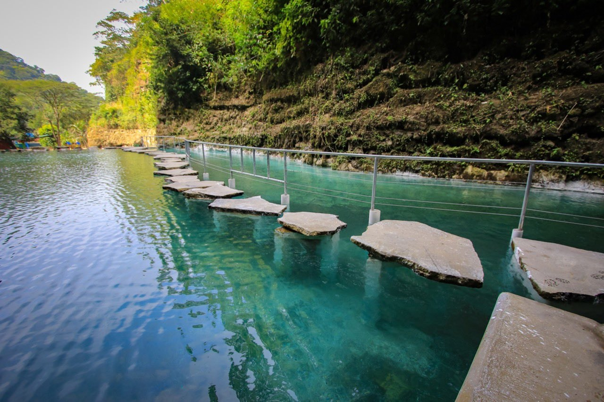
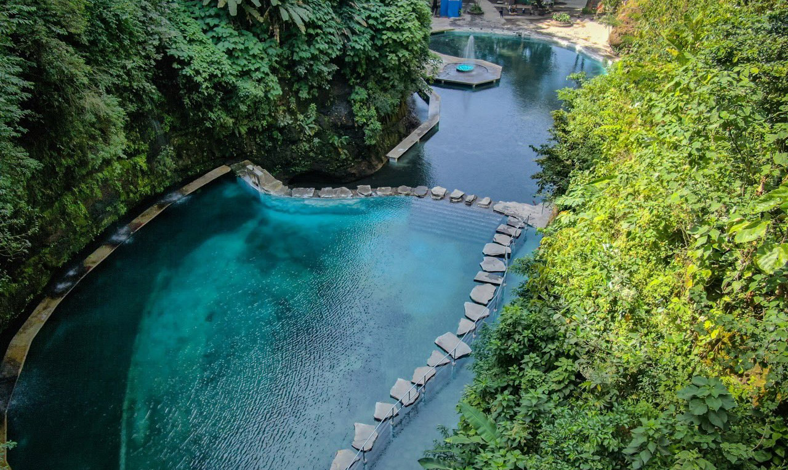
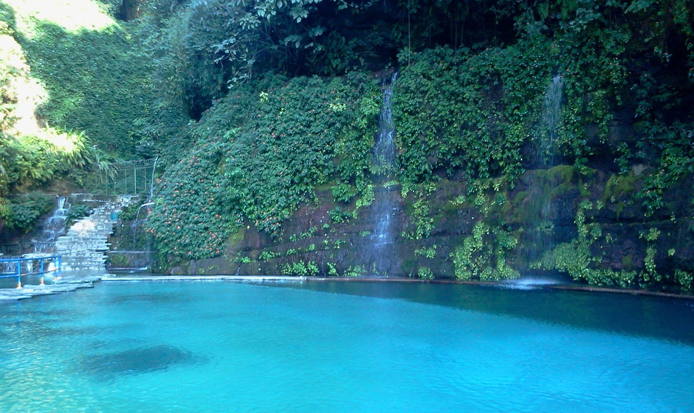
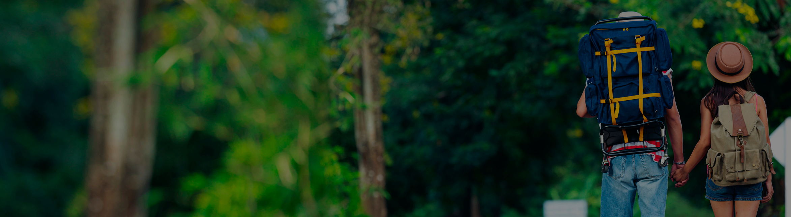

El turicentro Los Chorros es probablemente uno de los lugares más hermosos de nuestro «Pulgarcito de América,
ya que combina la naturaleza con la diversión. Se encuentra ubicado en Santa Tecla>>, en el departamento de La Libertad.
Origen de su nombre
El nombre de este grandioso turicentro proviene por la existencia de muchos nacimientos de agua debido a las filtraciones
de aguas lluvias ocurridas en el Volcán de San Salvador.Los nacimientos de agua cristalina que posee este turicentro llena las piscinas y además mantiene un clima agradable en el lugar. Además, lo grandioso de
estos nacimientos de agua cristalina es que, siendo tan fuerte su caudal

HISTORIA
El centro turístico Los Chorros posee un área total de 12 manzanas. Los Chorros fue inaugurado y abierto al público en 1952, creado gracias a la visión de Don Raúl Contreras. Don Raúl Contreras fue un ilustre poeta salvadoreño y es considerado el Padre de los Turicentros. Además, Los Chorros fue abierto
en homenaje a su gran labor como Creador del Sistema de Centros Recreativos de El Salvador.Estuvo cerrado por casi 7 años debido a los daños causados por los terremotos del 2001, su inauguración fue el pasado 13 de marzo del 2008.
El Parque cuenta con 4 piscinas de agua completamente natural

flora y fauna
grandioso de Los Chorros, además de su ambiente natural y clima fresco, es que es muy accesible a los turistas, tanto extranjeros como paisanos. Los Chorros posee una gran variedad de árboles frondosos y fauna dispersa en el área del turicentro. Los árboles
que más abundan en los alrededores del lugar son los frutales, especialmente los de mango.
Como llegar
Se encuentra ubicado a 18 kilómetros al oeste de San Salvador, el tiempo promedio que se emplea para transportarse de San Salvador a este centro turístico oscila entre aproximadamente 15 a 25 minutos.
Si se conduce en vehículo y procede de San Salvador, tome la Carretera Panamericana en dirección a Santa Ana o Sonsonate, la cual está debidamente señalizada a lo largo del camino. Al Parque se le conoce como «Calle a Los Chorros».
Para llegar por bus, la Ruta es 79 que va hacia Lourdes, Colón, abordarla en el Parque Bolívar, en San Salvado. Bajarse a la altura de Los Chorros. Al llegar a dicho lugar, el turista se encuentra rodeado de un grandioso paraje natural en donde encuentra hermosas piscinas con agua natural.
PRECIO
Turistas Extranjeros
PRECIO
$3.00
ADULTOS
PRECIO
$1.50
Vehículo liviano
PRECIO
$1.00 dólar
Vehículo pesado
PRECIO
$2.00 dólares


Ingresa para conocer más sobre lugares turísticos de El Salvador